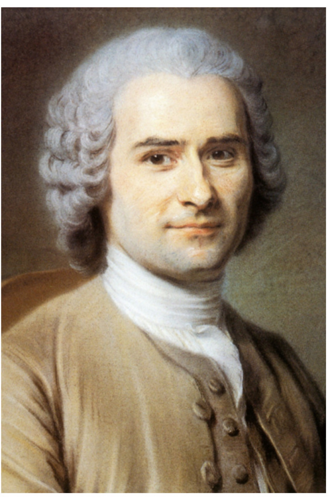

AFB I fragt Wissen ab, AFB II verlangt Erklären und Anwenden, AFB III verlangt ein begründetes Urteil.
3
Aufklärung: von der Lebensrealität zur Staatstheorie
Schulbuch Kapitel 3.2 · Material M4, M5 und M6. Von den Zuständen des Ancien Régime zu den Visionen von Rousseau und Montesquieu.
Arbeitsmaterial
M4 "Gedankenexperiment: eine Reise in die Vergangenheit" (S. 209): Gedankenexperiment "ChronoTours" - eine fiktive Zeitreise. M5 "Alltag im Ancien Régime: Wie sah die Lebensrealität der Menschen in der zweiten Hälfte des 18. Jahrhunderts aus?" (S. 209-210): Text von Klawitter zur Lebensrealität der Landbevölkerung, dazu die Definition Ancien Régime. M6 "Welche idealisierenden Visionen hatten historische Staatstheoretiker?" (S. 210-211): Rousseaus Gesellschaftsvertrag und Montesquieus Gewaltenteilung, Steckbriefe und die Definitionen Volkssouveränität, Gewaltenteilung, Menschenrechte (WISSEN KOMPAKT, S. 214).

Jean-Jacques Rousseau (1712-1778). Aus M6, C.C.Buchner, S. 210.Charles de Montesquieu (1689-1755). Aus M6, C.C.Buchner, S. 211.
Volkssouveränität
Jean-Jacques Rousseau (1712-1778)
Der Mensch ist frei geboren, doch überall liegt er in Ketten.
Gesellschaftsvertrag: Freiheit durch Gemeinschaft.
Gemeinwille (volonté générale) zielt auf das Gemeinwohl.
Kritik: Privateigentum als Ursache sozialer Ungleichheit.
Gewaltenteilung
Montesquieu (1689-1755)
Macht muss Macht begrenzen.
Trennung von Legislative, Exekutive und Judikative.
Freiheit gibt es nur ohne Machtkonzentration.
Ziel: Schutz vor Willkür und Tyrannei.
Arbeitsauftrag
Bevor du die Wissens-Checks bearbeitest: Lies zuerst die Texte M4-M6 (S. 209-211) mit den Steckbriefen zu Rousseau und Montesquieu sowie die Definitionen zu Volkssouveränität, Gewaltenteilung und Menschenrechten (WISSEN KOMPAKT, S. 214). Nutze auch die beiden Steckbriefe oben. Erst mit diesen Informationen kannst du die folgenden Aufgaben beantworten - sie prüfen dein Verständnis, nicht dein Vorwissen.
Multiple ChoiceWissens-Check · M6
Welches Konzept stammt von Montesquieu? Tippe die richtige Antwort an.
MehrfachauswahlWissens-Check · M6
Welche Aussagen treffen auf Rousseau zu? Mehrere Antworten sind richtig - wähle alle aus und tippe dann auf Prüfen.
Aufgaben zu M4 und M5: die Ausgangslage
entwerfenAFB II · M4 Gedankenexperiment
Wähle für das ChronoTours-Gedankenexperiment (M4) einen Ort und eine Epoche vor 1789. Ermittle, welche heute selbstverständlichen Grundrechte dort nicht existierten oder stark eingeschränkt waren, und lege die Folgen für den Alltag dar.
0 Zeichen
Beispiel Frankreich um 1780: Es fehlten Gleichheit vor dem Gesetz (Ständegesellschaft), Meinungs- und Pressefreiheit, Religionsfreiheit, politische Mitbestimmung und Eigentumssicherheit für Bauern. Folgen: willkürliche Abgaben und Frondienste, keine Wahl der Herrschaft, Rechtsunsicherheit, kaum sozialer Aufstieg. Genau diese Missstände bilden den Hintergrund für die Theorien von Rousseau und Montesquieu.
beschreibenAFB I-II · M5 (Aufgabe 1)
Beschreibe mit dem Text von Klawitter (M5) die Situation des Dritten Standes im Ancien Régime.
Achte auf Feudalität, Seigneur, Abgaben (Taille, Zehnt), Landbesitz und die Lage der Bauern.
0 Zeichen
Erwartbar: Der Alltag auf dem Land ist durch die Feudalität bestimmt; der Seigneur herrscht als Grundherr über Dorf und Vasallen. Der Adel besitzt rund 25 Prozent des Bodens, der Klerus etwa 10 Prozent; die meisten Bauern besitzen kein oder wenig eigenes Land und müssen es pachten. Sie tragen die Hauptlast der Abgaben (Königssteuer/Taille, Kirchenzehnt, Frondienste, Monopolabgaben für Mühle und Backofen) und verdienen am Ende nur wenige Sous am Tag, während die Brotpreise steigen.
Hilfe: Sammle zuerst nur die Zahlen aus dem Text (Prozente, Sous, Brotpreis). Baue darum herum die Beschreibung.
Challenge: Erkläre, warum diese Lebensrealität den Wunsch nach den Ideen aus M6 verständlich macht.
Aufgaben zu M6: die Visionen
erläuternAFB II · M6 Text 1 (Rousseau)
Erläutere anhand von Rousseaus Text (M6 Nr. 1) den Gesellschaftsvertrag und den Gemeinwillen.
Kläre: Was ist das "grundlegende Problem", das der Gesellschaftsvertrag lösen soll? Was unterscheidet volonté générale (Gemeinwille) von der Summe der Einzelinteressen?
0 Zeichen
Erwartbar: Der Mensch ist frei geboren, liegt aber überall in Ketten. Das Grundproblem: eine Form des Zusammenschlusses zu finden, die jeden schützt und in der jeder dennoch "so frei bleibt wie zuvor", weil er nur sich selbst gehorcht (den selbst gegebenen Gesetzen). Der Gemeinwille (volonté générale) zielt auf das gemeinsame Wohl und ist mehr als der Wille aller (volonté de tous), der nur die Summe der Sonderinteressen ist. Kern: Volkssouveränität, Freiheit durch Beteiligung.
erläuternAFB II · M6 Text 2 (Montesquieu)
Erläutere mit Montesquieus Text (M6 Nr. 2), warum politische Freiheit nach ihm nur durch die Trennung der Gewalten möglich ist.
Belege, was passiert, wenn legislative und exekutive Gewalt in einer Person vereint sind.
0 Zeichen
Erwartbar: Politische Freiheit ist die aus Sicherheit entstehende Beruhigung. Sind legislative und exekutive Gewalt in einer Person oder Körperschaft vereint, gibt es keine Freiheit, weil dieselbe Instanz tyrannische Gesetze erlassen und tyrannisch vollziehen kann. Ebenso darf die richterliche Gewalt nicht mit den anderen verbunden sein. Nur die Trennung von Legislative, Exekutive und Judikative sichert Freiheit. Kern: Gewaltenteilung als Schutz vor Willkür.
erläuternAFB II · Aufgabe 2b
Erläutere, wie die Ideen von Rousseau und Montesquieu auf die französische Landbevölkerung gewirkt haben könnten, hätten diese davon Kenntnis erlangt.
Verbinde M5 (Lebensrealität) mit M6 (Ideen).
0 Zeichen
Erwartbar: Für eine rechtlose, mit Abgaben belastete Landbevölkerung wäre Rousseaus Volkssouveränität eine Sprengkraft gewesen: Herrschaft solle vom Volk ausgehen, nicht von Adel und König. Montesquieus Gewaltenteilung hätte die willkürliche Verbindung von Gesetzgebung und Vollzug in der Hand des Seigneurs oder Monarchen als Ursache der Unfreiheit entlarvt. Beide Ideen konnten den Wunsch nach Gleichheit, Beteiligung und Rechtssicherheit begründen und wirkten so revolutionär.
vergleichen und bewertenAFB III · Aufgabe 3 (Brücke zu M7)
Vergleiche die Konzepte "Gemeinwille" (Rousseau) und "Gewaltenteilung" (Montesquieu) im Hinblick auf ihre Umsetzung in der modernen Demokratie und bewerte, welches Konzept heute leichter verwirklicht ist.
Diese Aufgabe leitet direkt zur Seite Gegenwart M7 über.
0 Zeichen
Erwartbar: Montesquieus Gewaltenteilung ist institutionell klar umgesetzt (Bundestag, Regierung, Gerichte; in Deutschland als Gewaltenverschränkung, siehe M7). Rousseaus Gemeinwille ist schwerer fassbar: Wer bestimmt, was dem Gemeinwohl dient? In der repräsentativen Demokratie wird er über Wahlen und Parlament vermittelt, direktdemokratische Elemente bleiben begrenzt. Ein begründetes Urteil nennt ein Kriterium (z. B. Kontrollierbarkeit) und entscheidet damit, meist zugunsten der leichter institutionalisierbaren Gewaltenteilung.